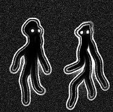

<!-- right now this holds a placeholder friend,
each list item should consist of
the friend's profile picture, name, and a preview
of the most recent chat message
furthermore clicking on a friend should pull up
the chat page.

This is all contingent on whether we choose to impliment chat,
we could also just use the space for the most recent chat text to display
the user's most recent location-->
<ion-header>
        <ion-navbar color = "dark">
            <ion-buttons end>
                <button ion-button icon-only (click)="goAllUsers()">
                    <ion-icon name="arrow-forward"></ion-icon>
                </button>
            </ion-buttons>
        </ion-navbar>
</ion-header>

<ion-content>
<!--
image src will be a variable returned by some firebase function
name should also be returned by a firebase function

to dynamically add items to a list add: 
    *ngFor="let item of items"
to the item name and then, in typescript,
a satement that looks like:
    this.items.push
-->
<ion-list>
    <ion-item-sliding *ngFor="let friend of Friends">
        <ion-item >
            <ion-avatar item-start>
                
                
            </ion-avatar>
            <h2>{{friend.user.first + " "+ friend.user.last}}</h2>
        </ion-item>
        <ion-item-options side="left">
            <button ion-button color="dark">
                <ion-icon name ="mail"></ion-icon>
                Message
            </button>
            <button ion-button color="dark">
                <ion-icon name = "navigate"></ion-icon>
                Locate
            </button>
            
        </ion-item-options>
    </ion-item-sliding>

</ion-list>

</ion-content>


<!--
    <ion-item>
        <ion-avatar item-start>
            
        </ion-avatar>
        <h2>Fren</h2>
        <p>We are frens</p>
    </ion-item>
-->
